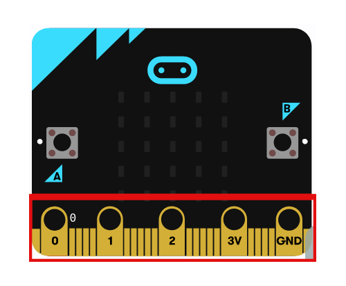

La tarjeta micro:bit dispone de 25 conectores situados en el borde inferior, a través de los cuales se pueden programar motores, LEDs o cualquier otro componente o sensor externo. Los pines se pueden manejar usando pinzas de cocodrilo

Comenzamos con el manejo de los pines 0, 1 y 2. Estos pines son flexibles y tienen diferentes aplicaciones. Por eso los llamamos de propósito general de entrada salida (o con las siglas GPIO, general purpose input and output). Con estos tres pines se pueden leer los valores de los voltajes analógicos y podemos usarlos como conversores analógicos-digitales (ADC, analog-to-digital converter).
Vamos a ver algunos ejemplos de uso